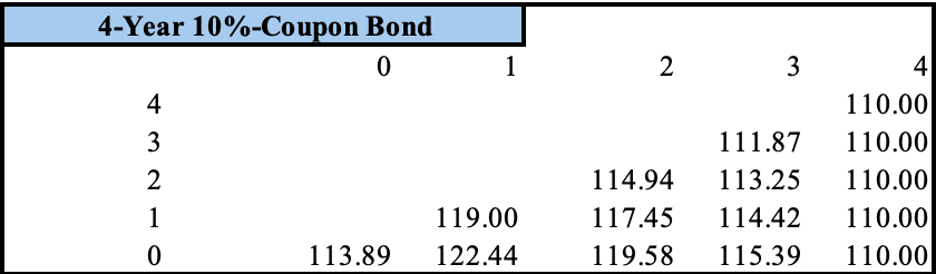
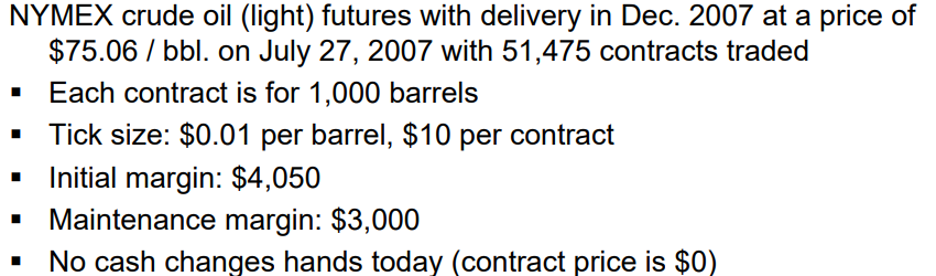

Forward
Definition: Forward contract is an agreement to trade assets at a predetermined price on a specified date. Having a forward contract may help stakeholders hedge the volatility in the underlying asset’s price to stabilize their operation.
In the section, we will apply the binomial pricing method to value a forward contract on bond. Suppose there is a bond that is worth 100 par and pays 10% coupon (or 10$) a year and matures in 4 years. What should be the price of a forward contract that delivers the bond in year 2?
To answer this question, we need to value the underlying asset first.
Bond valuation
To avoid arbitrage, the bond value should be the same as the cash flow it creates from now until its maturity discounted to the present. For simplicity, the interest rate is fixed at 5%, which makes the bond worth \(\frac{10}{1+0.05} + \frac{10}{(1+0.05)^2} + \frac{110}{(1+0.05)^3}=109.05\).
But in reality, interest rate changes. In the binomial pricing model, these changes are simulated by fixed upstate and downstate factors. These factors create 2 possibilities of the interest rate in the next period at any time in the lifetime of the bond. Suppose the current interest rate (year 0) is 6%, the upstate and downstate factors are 1.1 and 0.9 respectively. As a result, the interest rate in year one can be \(6*1.1 = 6.6\%\) in the upstate or \(6*0.9 = 5.4\%\). And the rest of the below lattice can be filled using the same calculation.
The second characteristic of the binomial pricing method is risk-neutral probability the define the likelihood of an event or variable in the future (i.e the upsate and downstate of the interest rate) independently on the historical volatility. And the upstate and downstate probabilities of the interest rate are the same as 50% in the rest of this article.
Now the bond valuation process becomes more complicated as the future interest rate is unknown. But there are certainly 2 fair prices to correspond to 2 possible interest rates in the next time step. We can discount the expected value of these 2 prices to obtain the fair bond price at present.
Suppose we are in t =3 and the interest rate is 7.99% (cell(3,3)). We will always get 110 cash back at t=4, including 100 par and 10$ coupon. So, the expected cash flow in year 4 is 110. The cash flow discounted to year 3 is \(\frac{1}{1+0.0799} (0.5*110+0.5*110) + 10=111.87\), which is also the bond fair price at t=3. We added 10 in the above formula to factor in 10$ coupon payment for holding the bond from year 2 to year 3. Similarly, we can calculate the remaining possible fair values of the bond for all scenarios in year 3 by using appropriate interest rates. Imagine we are now in year 2 and the interest rate is 7.26%. The expected cash flow of year 3 from the current interest rate can be either 108.46 or 111.44, depending on the interest rate in year 3. So the bond price in cell(2,2) is \(\frac{1}{1+0.0938} (0.5*111.87.46+0.5*113.25) + 10 = 114.94\). Repeating the process until cell 0,0 is filled, we can get the fair price at present (year 0). Note that in year 0 we don’t receive 10$ coupon payment, so this amount should not be added to the period.
Forward valuation
Gain or loss of the contract realized when the bond is delivered is measured by the difference between the bond’s spot price (\(S_0\)) and the predetermined price (\(G_0\)). To avoid arbitrage, the expected gain of the contract should be 0. Otherwise, we can either long or short the contract at the moment to make risk-free profit. As a result,
\(f_0=E^Q_0[\frac{Z^4_2-G_0}{B2}]=0<=>E^Q_0[\frac{G_0}{B2}]=E^Q_0[\frac{Z^4_2}{B2}]<=>G_0 E^Q_0[ \frac{1}{B2}]=E^Q_0[\frac{Z^4_2}{B2}]<=>G_0=\frac{E^Q_0[\frac{Z^4_2}{B2}]}{E^Q_0[ \frac{1}{B2}]}\) where,
- \(E^Q_i[x]\) is the expected value of x in year I under the risk-neutral assumption
- \(f_0\) is the value of the futures\(Z^4_2\) is the price of the bond that is delivered in year 2 and expires in year 4
- \(B_2=(1+r_0)(1+r_1)\) is the discount rate for year 2 where \(r_i\) is the interest rate in year i
- \(G_0\) is the forward price for the underlying asset in the contract
- \(E^Q_0[\frac{Z^4_2}{B2}]\) is the fair price of the bond that is delivered in year 2 and matures in year 4
- \(E^Q_0[ \frac{1}{B2}]\) can be seen as the fair price of a zero-coupon bond that matures in year 2 and is worth 1$ par
Calculate \(E^Q_0[\frac{Z^4_2}{B2}]\): Not until the bond is delivered in year 2, could we receive coupon payment. Applying the binomial pricing method above, we can easily calculate the fair price in all possible scenarios in year 2. To calculate the fair price at present, we use the same formula but note that there is no cash flow generated from now to year 2.
\(E^Q_0[\frac{1}{B2}]\), the price of a 2-year zero-coupon bond that pays 1 at maturity, can be calculated similarly. Cell(1,1) = \(\frac{1}{1+r_{11}}(1*0.5+1*0.5)=\frac{1}{1+0.066}(1*0.5+1*0.5)~=0.94\), where \(r_{11}\) correspond to cell(1,1) in interest rate lattice. Cell(1,0) = \(\frac{1}{1+r_{10}}(1*0.5+1*0.5)=\frac{1}{1+0.054}(1*0.5+1*0.5)~=0.95\). And Cell(0,0) = \(\frac{1}{1+r_{00}}(0.94*0.5+0.95*0.5)=\frac{1}{1+0.06}(0.94*0.5+0.95*0.)~=0.89\).
Therefore, \(G_0=104.45/0.89 = 117.3628\).
Futures
Definition: Futures contract is similar to a forward contract in a sense that it allows trader to buy or sell the underlying assets at a determined price in the future.
But the first difference is that futures is standardized for trading. One example of futures can be as below.
The second difference is that futures contracts are settled daily through margin accounts of stakeholders. For example, to involve in a futures on 100 apples at 2$ each in 5 days, the buyer and seller of a futures have to deposit 20 dollars each in their accounts. On day 1, the spot price increases to 2.05$/apple, the seller loses 0.05*100 = 5$, and this amount is transferred seller’s account to the buyer’s account. On day 2, the price goes up to 2.11$/apple. This means the seller loses 6 more dollars, and their account is now 9$ while that of the buyer is increases by 11$ to 31$. At this point, the margin of 10$ is triggered. Margin is the minimum amount in stakeholders’ accounts to be involved in the contract. If the seller’s account is less than the margin, they must deposit more money to make their account equal to the initial deposit. Otherwise, they will lose the entire account and their position in the future. In this scenario, the seller has to put 11$ to make his account 20$. At maturity, the delivery is made at the spot price, but gains or losses of the futures are settled daily.
Transactions between seller and buyer are made by a third party called the clearinghouse. This party is responsible for making daily transactions due to changes in the spot price of the underlying asset. Another purpose of the clearinghouse is to hedge counterparty risk as it can possess the entire account of whoever does not comply with terms in the contract. Also, if the seller defaults, being unable to deliver enough apple, the clearing house will deliver the rest to make up for the buyer.
Seller and buyer are not necessarily in the contract until the expiration date. Instead, they tend to close their position by the delivery date. Buyer (in a long position), in the above example, makes a profit of 11$ after 2 days. He can close the position by selling the contract to someone else who expects apple price to keep rising in the future. Note that, at the moment the future is settled between the old buyer and the new buyer, it is worth 0. The reason is that although the future creates 11$ for the old buyer, this amount remains in his account. So the new buyer receives nothing at the moment the future is transferred to him.
Futures valuation
Considering a futures on a bond that is worth 100 par, pays 10% annual coupon and matures in 4 years from now. The futures deliver the bond in year 2. What should be the future price for this underlying bond.
As explained in the bond valuation section above, the fair value of this bond at different points in its lifetime can be found in the below table.
To avoid arbitrage, the future price at any time should make the expected return of the future 0. If we enter the a future in year 1, the future price \(F_1\) should satisfy the equation \(E^Q_{3}[\frac{F_2-F_{1}}{1+r_{12}}]=0\) (1), where
- \(F_1\) is the futures price of the underlying bond in year 1
- \(F_2=S_2\) is the spot price of the underlying bond. To generalize, \(F_n=S_n\) where n is the maturity of the futures
- \(r_{12}\) is the forward rate from year 1 to year 2, known at the moment we enter the contract
Equation (1) is equivalent to \(E^Q_{1}[\frac{F_4}{1+r_{12}}]=E^Q_{1}[\frac{F_{1}}{1+r_{12}}]<=>F_{1}=E^Q_{1}[F_4]\) as \(r_{12}\) is known in year 1 (when we enter the contract). Similarly, if we enter the contract in year 0, the fair future price \(F_0\) should make the expected return in year 0 equal 0, which means \(F_{0}=E^Q_{0}[F_1]=E^Q_{0}[E^Q_{1}[F_2]]=E^Q_{0}[S_2]\).
The general formula is \(F_0 = E^Q_0[S_n]\) where \(S_n\) is the sport price of the underlying asset at maturity of the futures.
Applying this formula, we can easily the futures price for the underlying bond in year 0 at 117.3562. In the below table, column 2 is the price vector of the underlying bond corresponding to different scenarios of the interest rate (copied from column 2 of the bond valuation table). Cell(1,1) is the weighted average of cell(2,2 and cell(2,1). Cell (1,0) is the weighted average of cell(2,1) and cell(2,0). Cell(0,0) is the weighted average of cell(1,1) and cell(1,0). Note that the futures price is slightly lower the forward price.